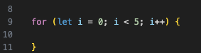
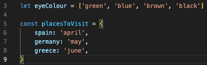
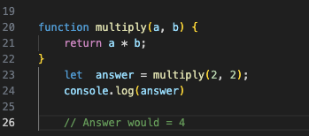

JavaScript, also known as the language of the web, is a programming language that is used to breathe life
and interactivity into websites. Along with HTML and CSS, it makes up a trio of programming languages that you will
see in pretty much all web pages you might visit.
To help understand what JavaScript is, what it does, and its relationship to HTML and CSS, think of these three languages
as what makes up a tree in nature. HTML is the structure, the solid wood inside that holds everything up,
providing the building blocks and stability. CSS is the texture of the bark, the colour, and the shape of leaves and branches.
Finally, JavaScript is like the magical way that nature affects the trees, morphing the colour of their leaves as seasons change,
and moving the branches in the wind in real-time. In order for a tree to be what it is, all these aspects are needed and relied upon.
This is much like a web page where these three languages need each other to create what you see on your screen
in the form of useful, interactive sites.
Routines are another very normal part of life, a flow, if you will, consisting of things you do each day.
This brings me to control flow within JavaScript. Blocks of code within a JavaScript application have to be executed at specific times,
and control flow is essential for things to run smoothly. This is much like making sure you wake up in the morning at a specific
time and then ensuring you depart for work at another given time to make sure you arrive at work when you’re meant to.
Control flow is also governed by conditions, ensuring that only certain code runs when it's needed.
Similar to these routines in everyday life, JavaScript also has loops that execute code when conditions within that loop are correct.
Think of your morning routine as a loop, and as long as you aren’t calling in sick, and your condition is good, you’ll be carrying out that routine.
Here's an example of what a loop might look like.

In this example, the loop will run as long as 'i', which starts off = to 0, is = to less than five. After that it stops looping.
Another way that JavaScript works its magic is its ability to change or create things, like perhaps altering or creating text within
the DOM without it being there in the first place. This is called DOM manipulation. But what is the DOM? Imagine the DOM again as a tree.
It starts from the root and extends out into many branches. The root is the document itself and DOM continues to branch out into segments called nodes.
These nodes could be elements of HTML and its tags with text that you see appear on a web page. The DOM also allows JavaScript to update
and create an interactive environment on a site without having to refresh the page, like that link that changes shape and colour when your mouse hovers over it.
A picture of a DOM strcture is below.

What if we want to store information to be accessed? Two ways of structuring this information are in arrays and objects.
Arrays store their information in numbered index, for instance, if there are five items in an array, these would be numbered 0 - 5.
This information is then accessed using each item's number. Objects on the other hand aren’t indexed and contain information like lists
with people's names and a corresponding valve like eye colour. You would then be able to retrieve the eye colour using the person's name as a key.
Below is an array and an object for context.

The arrary is the list shown at the top. The items it contains are in a form called strings.
The object is below, showing its different format of organising infomation.
Functions hold code, which would be for carrying out a specific task. To get a task going the function would be ‘called’, or triggered,
at that moment executing the task in the form of code which it carries.
An example of a Function follows.

In the function above, a multiplication equation is carried out. The function has parameters in brackets named a, and b.
These parameters are given valves at the bottom as a = 2 and b = 2. The return statement then multiplies them together.
Console log is a way of viewing the answer inside a console, which would show = 4. This is an example of how a function could store
a task within it, and when called, exicute that task and produce a needed result.
Functions can also call or trigger other functions from within them after it has been triggered and their task carried out.
This is very useful for keeping things structured and part of control flow to make your code complete the tasks it was meant to do!!